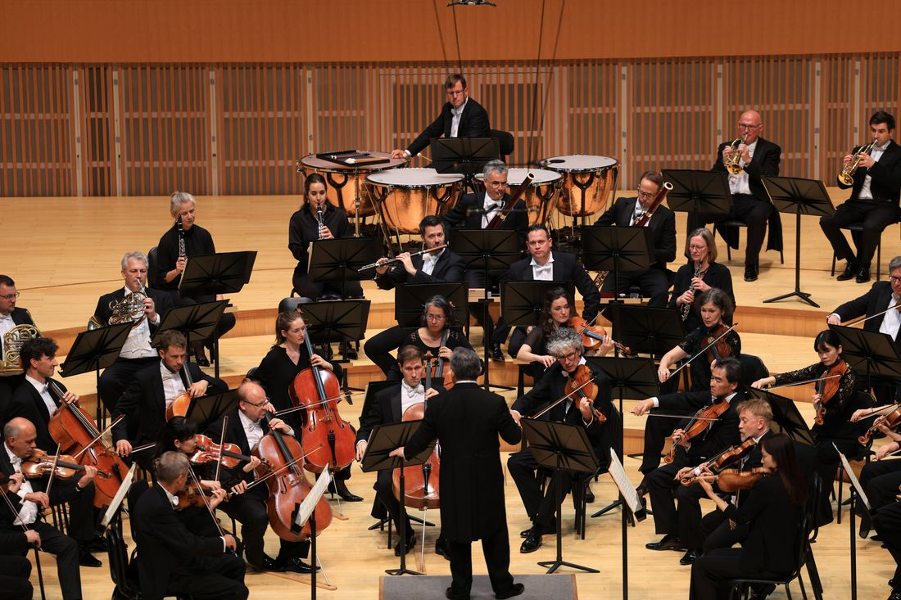
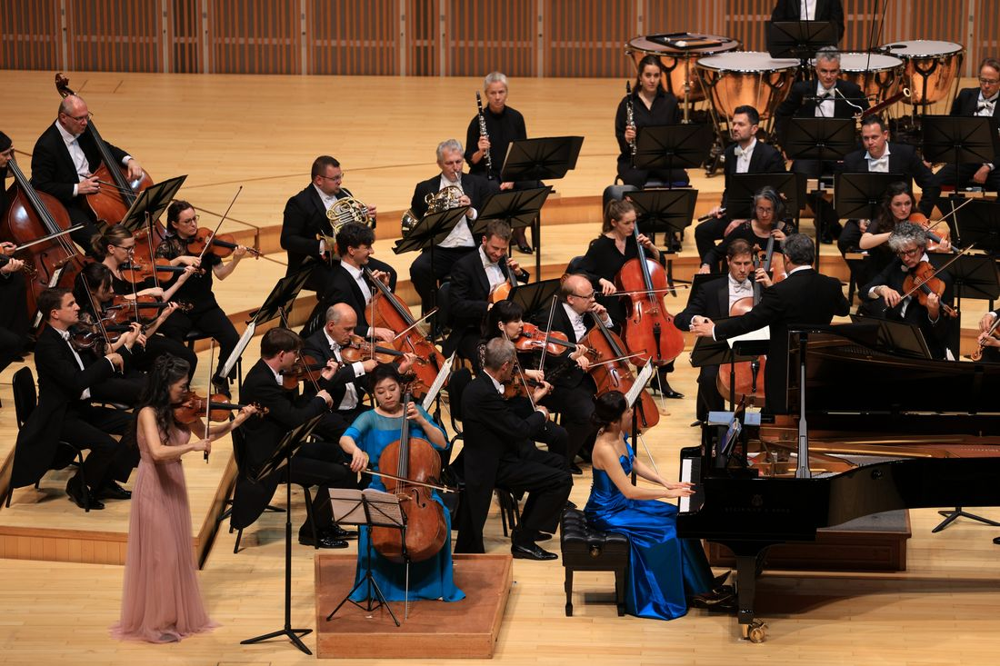
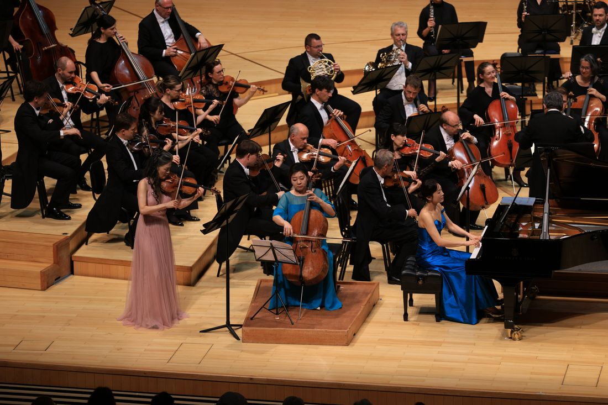

Seoul — The Stuttgart Philharmonic Orchestra, one of Germany's most distinguished ensembles and a cultural emblem of the city of Stuttgart, has successfully concluded its first performances in South Korea — concerts held at the Lotte Concert Hall in Seoul on May 29.
These landmark performances offered Korean audiences a rare opportunity to experience the depth and richness of the German orchestral tradition through a program devoted entirely to the music of Ludwig van Beethoven. Audiences remained fully engaged throughout both evenings, rewarding the musicians with sustained, enthusiastic applause at the close of each concert.
The concerts were led by Adrian Prabava, widely recognized for his dynamic career across Germany and Europe. His nuanced yet propulsive interpretation drew out the orchestra's hallmark qualities — a cohesive ensemble sound, refined musicality, and the burnished tonal palette characteristic of the great German orchestral tradition.

The evening opened with Beethoven's Coriolan Overture, Op. 62, a work of dramatic intensity and powerful emotional contrasts. The Stuttgart Philharmonic delivered a taut, incisive reading that showcased both technical precision and expressive depth, setting the tone for an evening of authoritative Beethoven playing.
The Triple Concerto, and three Korean soloists
Beethoven's Triple Concerto in C Major, Op. 56 featured three distinguished Korean soloists: violinist Kyung Sun Lee, cellist Meehae Ryo, and pianist Soyeon Kang. Having each cultivated a distinctive musical voice through years of international performance experience, the three artists brought their individual colors and artistry to the stage while breathing as one within the framework of the work.

Lee guided the musical narrative with clarity and restraint, while Ryo provided a rich, warm sonority that anchored the ensemble. Kang, with her refined touch and expressive flexibility, served as a natural bridge between the two string soloists and the orchestra.
More than a showcase of individual virtuosity, Beethoven's Triple Concerto demands a chamber music sensibility in which the soloists and orchestra constantly listen and respond to one another. Throughout the performance, the three soloists maintained a close musical dialogue with the orchestra, capturing the elegance and conversational character that define the work. Their seamless ensemble playing left a lasting impression, highlighting a remarkable collaboration between some of Korea's leading musicians and one of Germany's most distinguished orchestras.

The Fourth, after the interval
The second half featured Beethoven's Symphony No. 4 in B-flat Major, Op. 60. The Stuttgart Philharmonic navigated the work's lyrical beauty and structural sophistication with the orchestra's signature sound — rich, transparent, and meticulously balanced. The performance revealed the symphony's vibrant energy and subtle nuances with remarkable clarity, reminding audiences why this often-overlooked work deserves a place alongside Beethoven's most celebrated symphonies.
"The level of concentration and musical appreciation among Korean audiences was truly remarkable. From the first note to the final applause, we felt a genuine connection with the audience. It was an unforgettable experience for all of us."
Adrian Prabava, conductorReflecting on the collaboration with the Korean soloists, he added, "Kyung Sun Lee, Meehae Ryo, and Soyeon Kang each possess exceptional artistry and individuality. At the same time, they blended beautifully with the orchestra, creating a performance that felt both refined and deeply communicative."
A representative of the Stuttgart Philharmonic commented, "South Korea has a thriving classical music scene and an audience with a profound appreciation for the art form. We were honored by the warm welcome we received and hope this will be the beginning of a lasting cultural relationship between our orchestra and Korean audiences."
The concerts were widely received as a significant artistic collaboration between one of Germany's leading orchestras and some of Korea's most distinguished musicians. The performances not only celebrated the enduring legacy of Beethoven but also reflected the deepening cultural and musical ties between Germany and South Korea.
With its successful Korean debut, the Stuttgart Philharmonic reaffirmed its place among Europe's finest orchestras, leaving audiences with a compelling encounter with the German symphonic tradition — and the promise of a relationship between orchestra and audience that may well continue to grow.